DAY 2: Taneichi (種市) > Kuji (久慈市)
SITES: Taneichi Seaside Park, Uge Beach (有家海岸), Nakanokumano Shrine (中野熊野神社))
Stay: Mifune Inn
Had a lovely uni rice breakfast. My friend is happy because today will be good weather
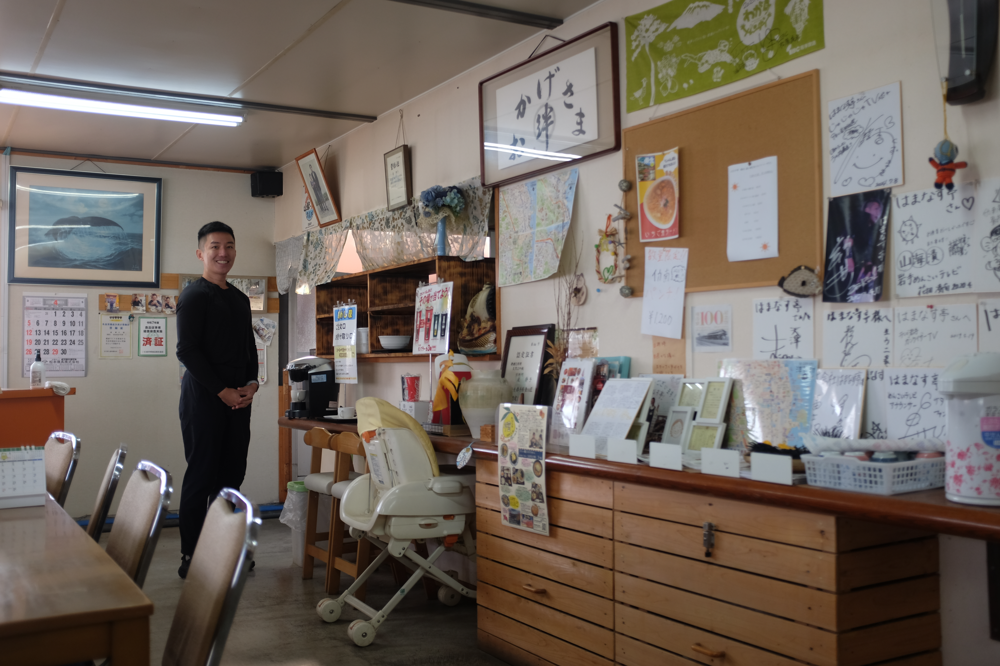
Indeed, much better weather today. The first bit was Taneichi Seaside Park. All along the closer parts to the coast, there are tsunami walls and warnings
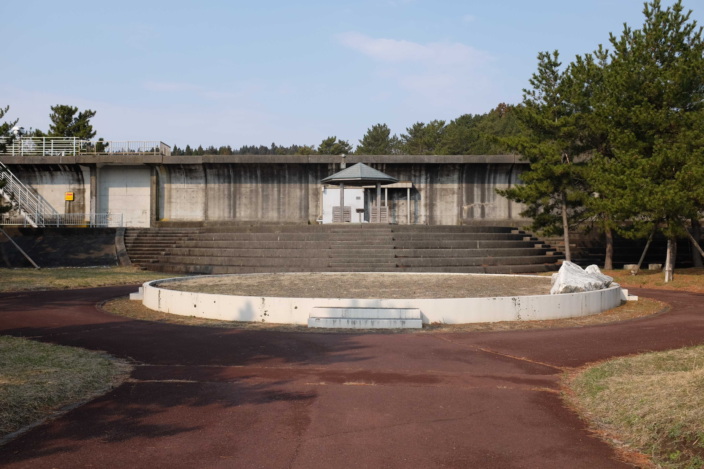
I can't get enough of this coastline. The waves are calming to watch. Various parts remind me of the Pacific Northwest Coast in the United States. At various parts, a similar cluster of trees lines the cliff. Sometimes, we get to walk through them, too.
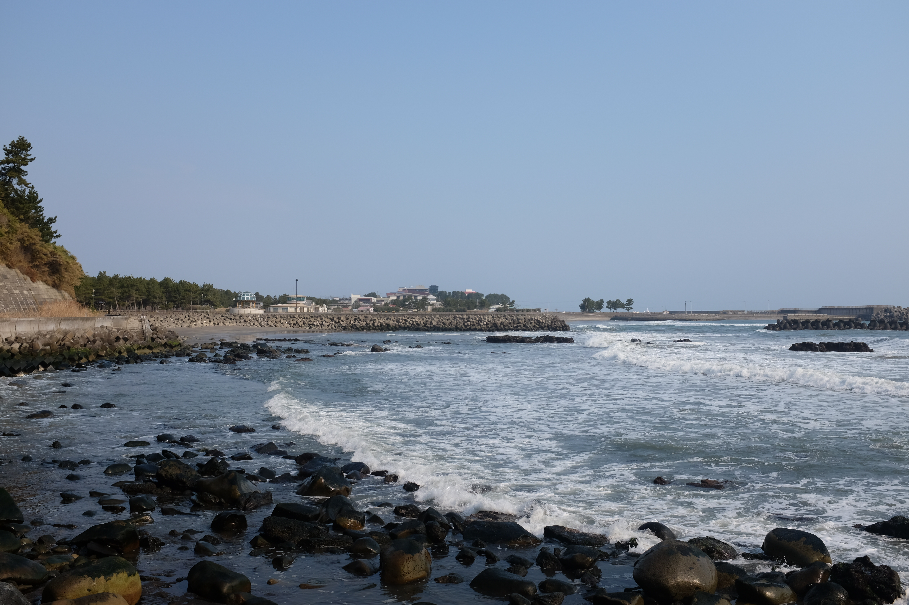
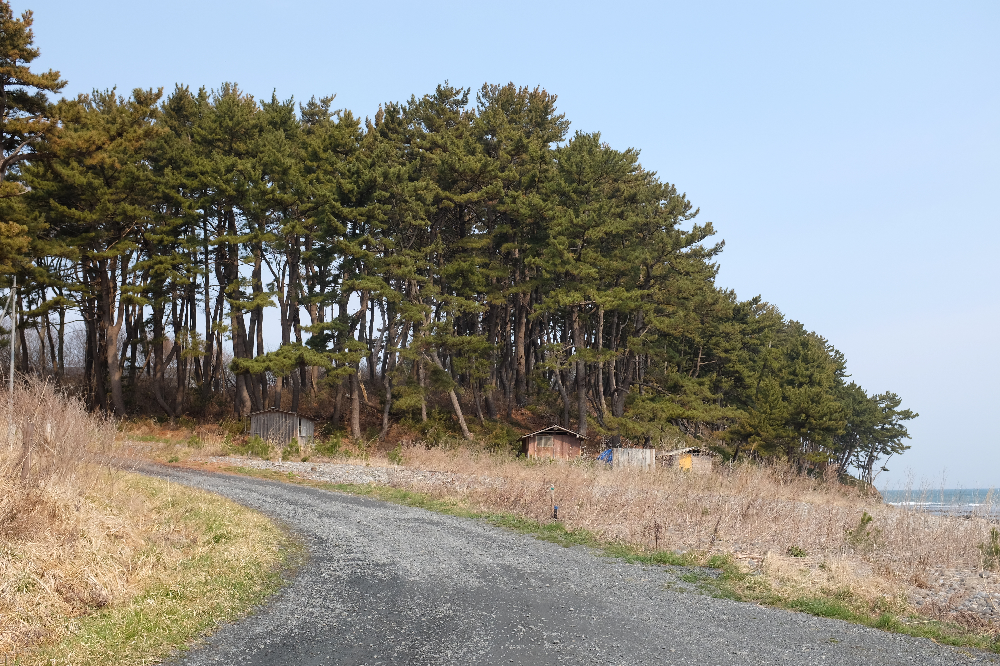
There are also some boats parked in the sheltered areas -- what I called the "Japanese countryside regatta"
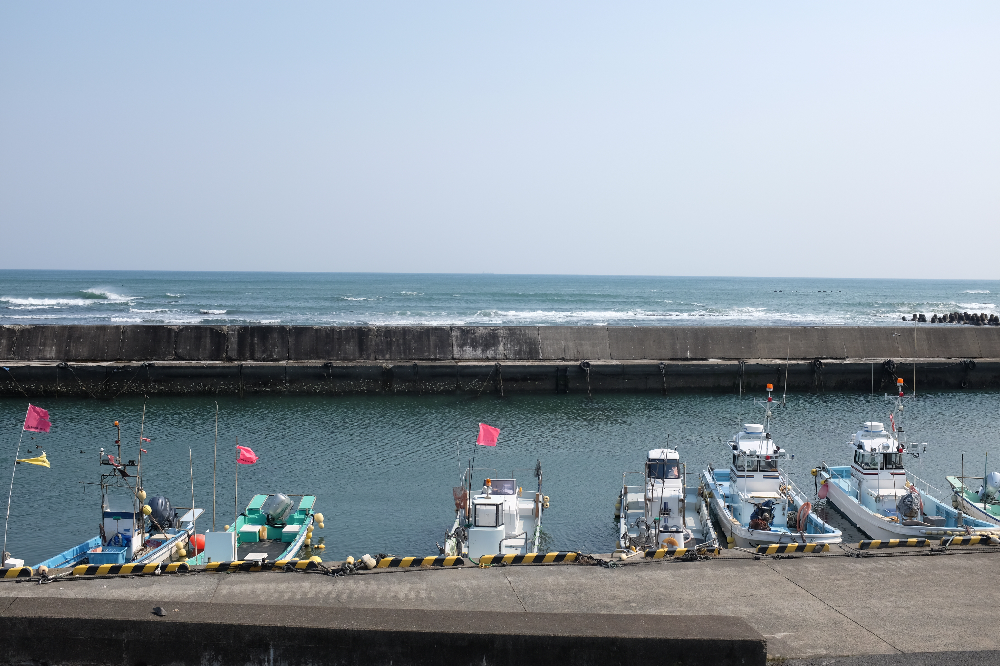
Every now and then, we pass a Japanese Rail (JR) station, which is always equipped with a small vending machine.
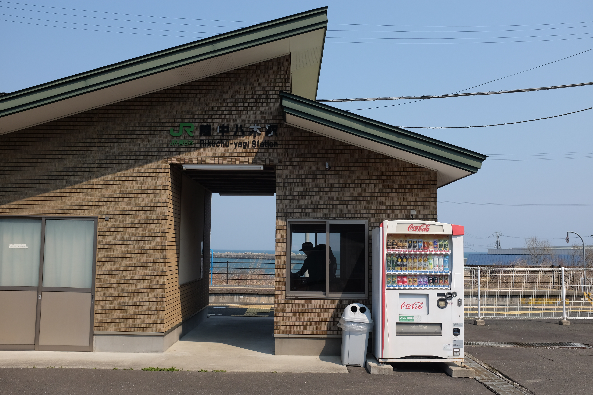
And a lot of small villages, too. Seems this one is a big supporter of Sanae Takaichi, Japan's current prime minister
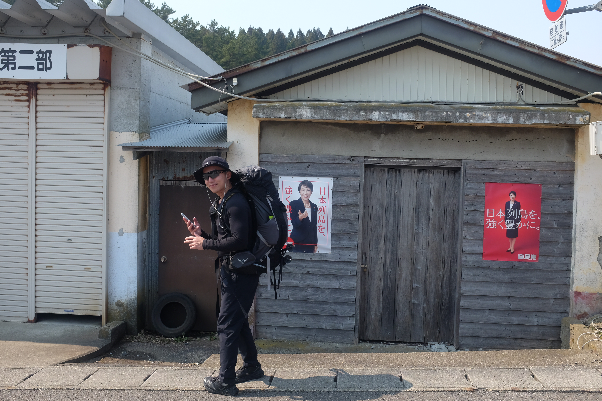
We make it to our first (?) pit stop to have a lunch. We don't see the restaurant, so all we do is go to the nearest convenience store -- Mini Shop. Nearby is Nakanokumano Shrine.
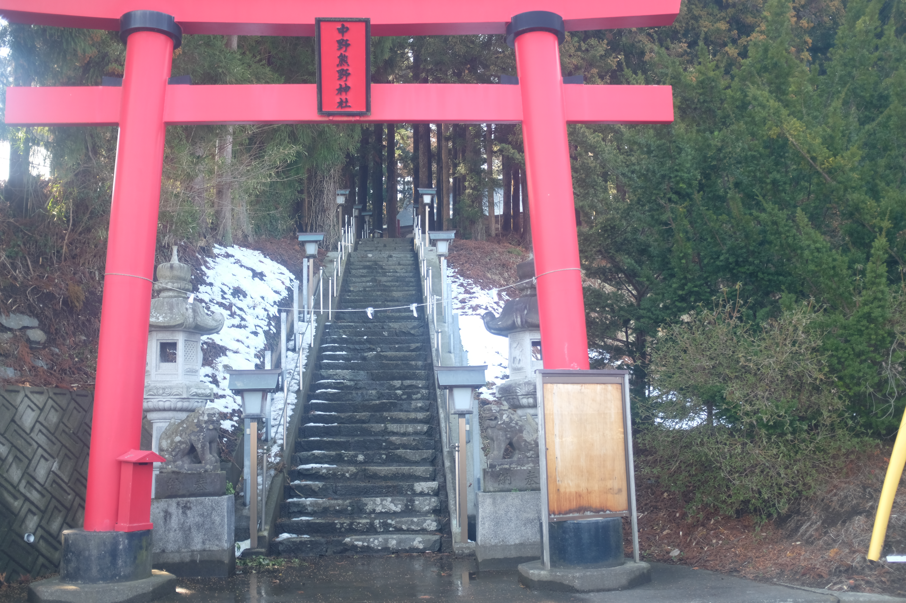
The best part about this stretch is the pine trees that sit on a steep cliff in the foreground, with the waves crashing in the background. The ocean reflects the blue colour of the sky and is a deep, rich blue. I am reminded so many times of California, and the coast nearby which I grew up.

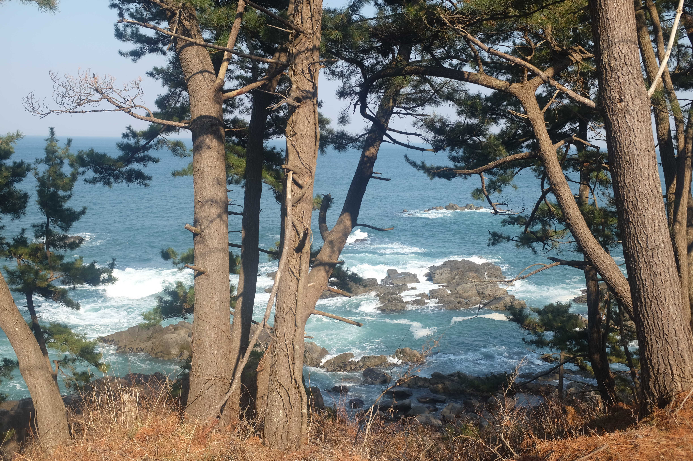
There was also a stretch where we had to cross a river. The picture below was the harbour right next to the river crossing. After several attempts, I gave up. An old man came over to advise us against crossing since the flow of the water in the winter was too strong. At least that's what we could make from our broken Japanese. He suggested we take the detour -- from where we just came -- and so we decided to call it a day. 25 kilometres, not bad.
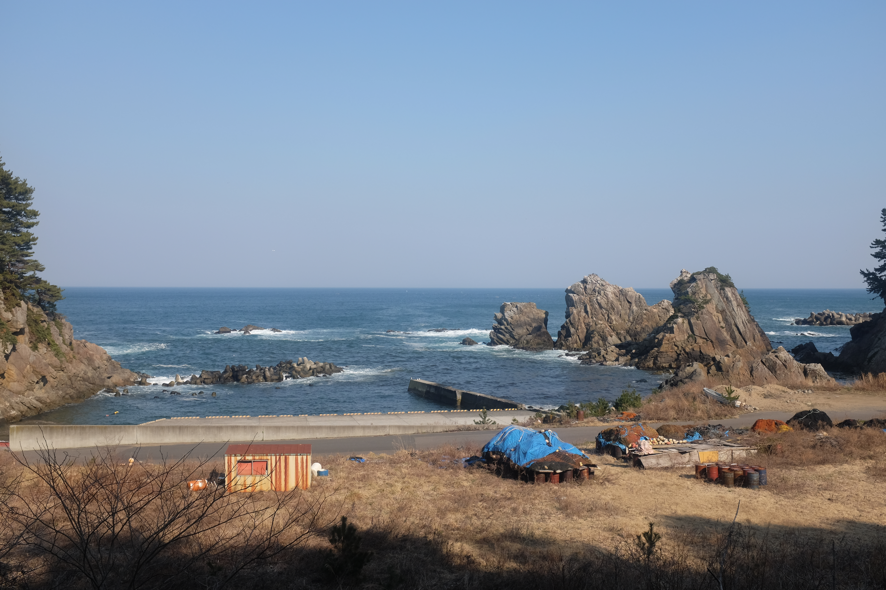
We get to the nearest JR rail station and take it down to Kuji. As soon as we get it in, it's dusk. The streetlamps are on, sandwiching the main street, and the sky transitions from purple, to yellow to pink. Straight out of a city pop album!
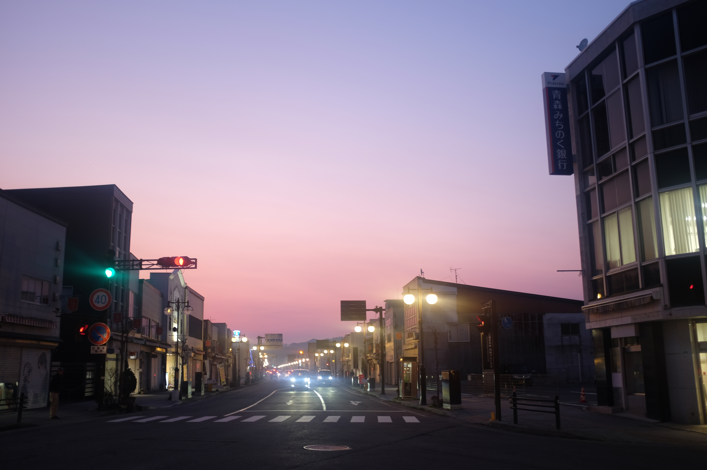